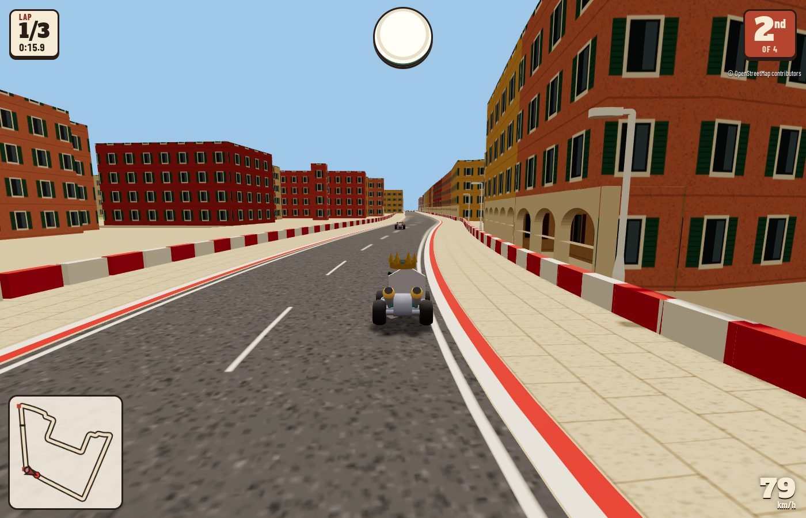

An arcade kart racer on real streets. The track comes from OpenStreetMap, with the buildings, porticoes and plane trees around it.
Racers, items and hazards are plain-text game files; the engine is Rust, compiled to WebAssembly, and deterministic: a race is a seed and the players' inputs, and replays exactly.

Capitan Pachino, the tomato pirate of Capitan Pachino 64, races his friend Captain Carota and two of his bosses, King Steak and Don Prosciutto, in their crowns, round the hospital of Sant'Orsola in Bologna.
tools/osm2track takes an OpenStreetMap extract and a route (street names, or
OSM way ids with a direction and a span) and builds a track file: the loop with rounded
corners and its width from the lanes, walls where the buildings stand, a racing line for the
computer's racers, checkpoints, the grid, the buildings with their heights and porticoes,
the city gates, and the scenery, baked. Any street in the world can be a circuit.
How routes work.
The circuit designer is a map of OpenStreetMap: load the streets of a
neighbourhood, click points along them in the order of the race, and it routes the circuit,
checks it as you go (its length, whether it closes, one-way streets, hairpins), dresses it with
plane trees, lamp posts and city gates, and previews it in 3D. Export the track block and the
extract, and tools/new-track.sh adds it to a game, bakes the buildings and scenery
into the map and races it. Pachino Grand Prix's second track, Tra le Porte, was drawn with it.